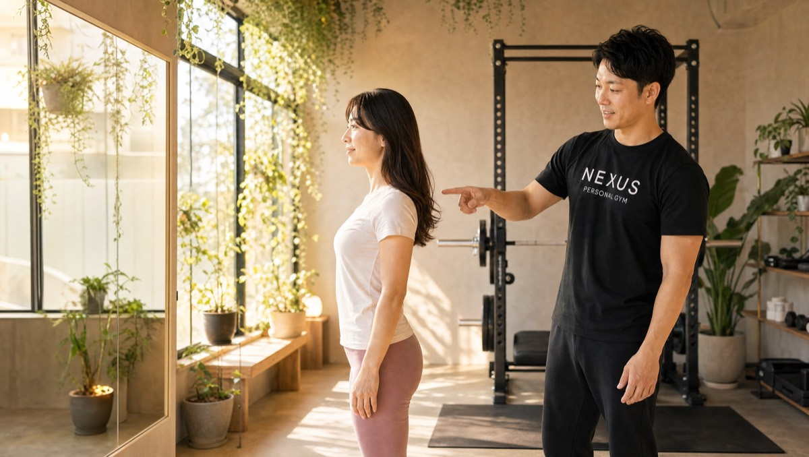

NEXUS Personal Gym ／ 神奈川県横浜市港北区
NEXUSパーソナルジム 綱島店｜服が似合う身体のための完全個室ジム

横浜市港北区綱島西、東急東横線・綱島駅から通える完全個室パーソナルジムです。綱島店が目指すのは、「痩せること」ではありません。目標にするのは、服が似合う身体——体重計の数字ではなく、シルエット・着こなし・姿勢を変えることです。「目的は減量ではなく、服をおしゃれに着こなせる身体づくり。3ヶ月で体型が変わり、選べる服が増えた」——そんな声のように、鏡に映る自分や、服を着たときの印象で変化を実感していただけます。姿勢が良くなると立ち姿が変わり、それが自信にもつながります。空間は、アパートの一室のような家庭的でくつろげる雰囲気。「初日からリラックスできた」という声のとおり、緊張せずに通い始められます。完全個室で担当トレーナーと二人だけだから、その日の体調に合わせて柔軟に調整でき、自宅でできるストレッチやケアまで教われます。ウェア・タオル・ドリンク・プロテインまで全部込みのアメニティ完備で、手ぶら通いOK。毎日8:00〜23:00・LINE予約で、東横線沿線の忙しい毎日にも無理なく続けられます。
- ブライダル対応
- 完全個室
- 綱島駅すぐ
- 大倉山・日吉から通える
- シルエット重視
- ★5.0（31件）
- 毎日8:00〜23:00
この店舗の特徴
NEXUS綱島店は、横浜市港北区綱島西にある完全個室パーソナルジム。東急東横線・綱島駅から通いやすく、大倉山・日吉といった沿線エリアからもアクセスしやすい立地です。この店舗いちばんの個性は、「痩せる」ではなく「服が似合う身体」をゴールに置いていること。体重を落とすことだけを目標にすると、数字に一喜一憂して続かなくなりがちです。綱島店では、シルエット・着こなし・姿勢という、鏡と服が教えてくれる変化を大切にしています。会員からは「目的は減量ではなく、服をおしゃれに着こなせる身体づくり。3ヶ月で体型が変わり、選べる服が増えた」という声をいただいています。同じ体重でも、姿勢が整い筋肉のバランスが変わるだけで、服の似合い方はまるで違って見えます。「姿勢が良くなり自信がついた」という声のように、立ち姿が変わることは、内面の自信にもつながります。さらに、綱島店の空間はアパートの一室のような家庭的な雰囲気。「家庭的な雰囲気で初日からリラックスできた」という声のとおり、緊張せずに通い始められます。完全個室のマンツーマンだから、その日の体調や気分に合わせて柔軟に調整でき、自宅でのストレッチやケアまで教われます。予約はLINEでサッと完結します。
サイズより、シルエット

ダイエットというと、多くの人が体重計の数字を追いかけます。けれど、本当に変えたいのは「服を着たときの自分の印象」ではないでしょうか。綱島店が目標にするのは、サイズや体重の数字ではなく、シルエットです。会員からは「目的は減量ではなく、服をおしゃれに着こなせる身体づくり。3ヶ月で体型が変わり、選べる服が増えた」という声をいただいています。同じ身長・同じ体重でも、どこに筋肉がつき、どこが引き締まっているかで、服の似合い方は驚くほど変わります。ウエストのくびれ、背中のライン、肩から腕にかけてのシルエット——こうした細部が整うと、これまで避けていたデザインの服も自然と似合うようになります。トレーナーは、あなたが「どんな服を似合わせたいか」を丁寧に伺い、そのためのボディメイクを設計します。数字だけを追うトレーニングでは得られない、「鏡の前で服を合わせるのが楽しくなる」という変化。それが、綱島店が届けたいゴールです。体重の増減に一喜一憂して挫折してきた方こそ、シルエットという新しいものさしで、続けられる手応えを感じてください。
目的は減量ではなく、服をおしゃれに着こなせる身体づくりでした。3ヶ月で体型が変わり、選べる服が増えたのが何より嬉しいです。
姿勢が変わると、立ち姿が変わる

服が似合う身体をつくるうえで、意外なほど大きな役割を果たすのが「姿勢」です。どんなに服を選んでも、猫背だったり、肩が内に入っていたりすると、シルエットは崩れて見えてしまいます。逆に、姿勢が整うだけで、同じ服でも見違えるほど印象が変わります。綱島店では、単に筋肉をつけるだけでなく、身体の使い方や姿勢のクセにも丁寧に向き合います。会員からは「姿勢が良くなり自信がついた」という声をいただいています。デスクワークやスマホの時間が長い現代の生活では、気づかないうちに姿勢が崩れているもの。トレーナーがあなたの姿勢や身体のクセをチェックし、必要な筋肉を目覚めさせ、正しいアライメントを取り戻していきます。姿勢が変わると、立ち姿が変わる。立ち姿が変わると、写真に映る自分も、鏡に映る自分も違って見える。そして何より、背筋が伸びた立ち姿は、そのまま内面の自信につながります。「なんとなく自分に自信が持てない」——そんな気持ちの根っこに、姿勢があることは少なくありません。綱島店で、立ち姿から変わる体験をしてみてください。
姿勢が良くなり、自信がつきました。トレーニング後のプロテインの爽快感も癖になって、通うのが楽しみになっています。
アパートの一室のような、くつろげる空間

パーソナルジムというと、無機質で緊張する空間を思い浮かべる方もいるかもしれません。綱島店は、そんなイメージとは正反対。アパートの一室のような、家庭的でくつろげる雰囲気を大切にしています。会員からは「家庭的な雰囲気で初日からリラックスできた」という声をいただいています。初めての場所、初めてのトレーニングは、誰でも緊張するもの。だからこそ綱島店では、身構えずに過ごせる居心地の良さを何より大切にしています。完全個室で担当トレーナーと二人だけの空間だから、周りの目を気にする必要もありません。世間話をしながら身体をほぐし、リラックスした状態でトレーニングに入る——その自然な流れが、続けやすさにつながります。「ジムは緊張する」「続けられるか不安」という方ほど、この家庭的な空間が力になります。トレーニングが特別なイベントではなく、日常の延長線上にある心地よい時間になる。そんな環境だからこそ、無理なく通い続けられ、シルエットや姿勢の変化がしっかり積み重なっていきます。まるで自分の部屋に帰るような気軽さで、綱島店に通ってみてください。
家庭的な雰囲気で、初日からリラックスして取り組めました。緊張しやすい私でも、自分の部屋のような気軽さで通えています。
20代の仕事パフォーマンスにも

服が似合う身体づくりは、見た目だけの話ではありません。身体を整えることは、日々の仕事や生活のパフォーマンスにも直結します。会員からは「身体が軽くなり、疲れにくくなった。自宅でできるストレッチとケアも教わった」という声をいただいています。姿勢が整い、必要な筋肉が働くようになると、身体を支えるのがラクになり、長時間のデスクワークでも疲れにくくなります。肩こりや腰の重さといった不調が軽くなることで、集中力が続きやすくなり、仕事のパフォーマンスにも良い影響が生まれます。東横線沿線で働く20代・30代の会員も多く、「見た目を整えたら、体調まで良くなった」という声は少なくありません。綱島店では、ジムでのトレーニングだけでなく、自宅でできるストレッチやセルフケアの方法まで丁寧にお伝えします。週に数回のトレーニングと、毎日のちょっとしたケア。この両輪があるからこそ、変化が定着し、維持しやすくなります。トレーニングの成果を食事から後押ししたい方には、月額3,000円（税込）のAI食事指導もご用意。見た目も、体調も、仕事のキレも——綱島店で身体を整えることは、暮らし全体を軽くすることにつながります。
身体が軽くなり、疲れにくくなりました。自宅でのストレッチまで教えてくれるので維持しやすく、仕事にも良い影響が出ています。
綱島・大倉山・日吉エリアの動線
NEXUS綱島店は、横浜市港北区綱島西2-4-14 ヘッジハウス203にあります。東急東横線・綱島駅から通いやすく、同じ東横線沿線の大倉山駅・日吉駅からもアクセスできる立地です。綱島エリアにお住まいの方、お勤めの方はもちろん、通勤・通学でこの沿線を利用する方にも便利にご利用いただけます。綱島は、再開発が進みながらも下町のあたたかさが残る、暮らしやすい街。若い世帯やファミリーも多く、日々の生活リズムのなかに無理なくトレーニングを組み込めます。営業時間は毎日8:00〜23:00なので、朝の時間でも、仕事帰りの夜でも通えます。ウェア・水・タオル・プロテインまですべてアメニティとしてご用意しているので、持ち物は通勤バッグひとつ、手ぶらのまま通えます。予約・変更はLINEで完結し、6時間前まで無料でキャンセルできるので、急な予定変更にも対応しやすい設計です。綱島・大倉山・日吉で「服が似合う身体をつくる完全個室ジム」をお探しの方は、ぜひ一度お越しください。
まずは無料体験から

「体重より見た目を変えたい」「服が似合う身体になりたい」「姿勢を整えたい」——そんな方こそ、まずは無料体験からお試しください。綱島店の無料体験は、カウンセリングであなたの目標や理想の見た目、これまでの運動経験をじっくり伺うところから始まります。「どんな服を似合わせたいか」「どんな立ち姿になりたいか」を言葉にすることで、目指すゴールがはっきりします。その上で、姿勢や身体のクセをチェックし、実際にトレーニングを体験。あなたのシルエットづくりに必要な種目を、フォームを丁寧に確認しながら進めるので、運動が久しぶりの方でも安心です。会員からは「家庭的な雰囲気で初日からリラックスできた」という声をいただいています。体験も手ぶらでOK。ウェア・タオル・ドリンクもすべてご用意しているので、仕事や予定の合間に、そのままお立ち寄りいただけます。綱島駅から通いやすく、大倉山・日吉からもアクセスできるので、通いやすさも安心です。無理な勧誘は一切ありません。まずは綱島店で、「服が似合う身体」への第一歩を、気軽に踏み出してみてください。
結婚式前のボディメイクを、綱島で

「ドレスの試着で二の腕が気になった」「背中の開いたデザインを、体型を理由に諦めたくない」——挙式という動かせない期日があるからこそ、ボディメイクは最後までやり切れます。綱島店では、まず挙式日とドレスのデザインをうかがい、背中・二の腕・デコルテ・ウエストという、ドレスでもっとも視線が集まる部位から優先順位をつけていきます。完全個室のマンツーマンだから、人目を気にせず自分の身体とだけ向き合えます。

残された日数によって、やるべきことは変わります。綱島店では挙式日から逆算した90日プラン・60日プランを用意し、「いつまでに、どの部位を、どこまで」を最初に設計します。極端な食事制限で当日フラフラ……ということがないよう、その日のコンディションから逆算する無理のない指導で、式当日にピークを合わせます。会員の約85%が女性で、ブライダルのご相談は日常的。体に不必要に触れないノータッチ指導を基本にしているので、はじめての方も安心です。

週を追うごとに、ドレスの試着で鏡に映る自分が変わっていきます。背中がすっと伸び、二の腕のたるみが引き締まり、デコルテに華やかさが出る。「このデザインで大丈夫かな」から「このドレスを選んでよかった」へ——目標が数字ではなく“当日の自分の姿”だからこそ、モチベーションが途切れません。綱島エリアで挙式を予定されている方は、エリア内の式場への下見や打ち合わせの動線に、そのままトレーニングを組み込めます。

迎えた挙式当日。積み重ねた90日・60日は、鏡の前の安心感になって返ってきます。姿勢よく背筋を伸ばして立ち、写真のどの角度でも堂々といられる——それは、頑張ってきた自分だけが手にできる自信です。綱島店は、その一日のために全力で伴走します。

挙式は、新しい生活のスタートでもあります。せっかく作り上げた身体を、そのまま新生活の習慣に。綱島店は毎日8:00〜23:00営業・月4回18,000円（1回4,500円〜）から続けられるので、挙式後の体型維持から、将来の産後の体型戻しまで長く伴走できます。全国約70店舗のネットワークがあるため、引っ越しや里帰りの際も最寄り店舗へ。「一生に一度」のために始めた習慣が、その後の人生を支える土台になります。
挙式まで残り80日で駆け込みました。背中の開いたドレスに合わせて、二の腕と背中を中心にプランを組んでもらい、当日は自信を持って写真に写れました。式後もそのまま通っています。
上記はサービス内容をわかりやすく伝えるためのモデルケース（イメージ）であり、実在するお客様の口コミではありません。Google口コミは本ページ内の該当セクションに実際の内容を要約して掲載しています。
挙式日からの逆算タイムライン｜ブライダル専用ページを見る料金プラン
入会金は通常55,000円、無料体験当日入会で15,000円（税込）に割引。AI食事指導は月額3,000円（税込）。全店舗共通の料金です。
アクセス
- 店舗名
- NEXUSパーソナルジム 綱島店
- 住所
- 〒223-0053
神奈川県横浜市港北区綱島西2-4-14 ヘッジハウス203 - 最寄り駅
- 東急東横線 綱島駅（大倉山駅・日吉駅からもアクセス可）
- 営業時間
- 毎日 8:00〜23:00
- 電話番号
- 050-1790-8486
Googleマップの口コミ
出典：Google マップ
NEXUS綱島店はGoogle口コミ31件で★5.0を維持。体重よりシルエット・着こなしを変える指導と、くつろげる家庭的な空間が評価されています。「減量ではなく服をおしゃれに着こなせる身体づくりが目標で、3ヶ月で体型が変わった」「姿勢が良くなり自信がついた」「家庭的な雰囲気で初日からリラックスできた」という声が多く、見た目から変わりたい方に支持されています。
体が軽くなり、疲れにくくなりました。自宅でのストレッチまで教えてくれるので維持しやすく、無理なく続けられています。見た目も変わってきました。
綱島店のよくある質問
Q綱島駅の近くにパーソナルジムはありますか？+
Q体重よりも見た目を変えたいのですが可能ですか？+
Q大倉山・日吉からも通えますか？+
Q挙式まで3ヶ月ですが、結婚式に間に合いますか？+
Qドレスで気になる背中や二の腕を集中的に絞れますか？+
Q結婚式が終わった後も通い続けられますか？+
よくある質問（全店共通）
料金・制度などNEXUS全店に共通するご質問です。さらに詳しくは110問のFAQをご覧ください。
Q料金はいくらですか？+
Q手ぶらで通えますか？+
Qキャンセルはいつまでできますか？+
Q食事指導はありますか？+
Qトレーナーはどんな人ですか？+
Q女性会員は多いですか？+
Q体験の流れは？+
NEXUSパーソナルジムの特徴・料金をもっと見る